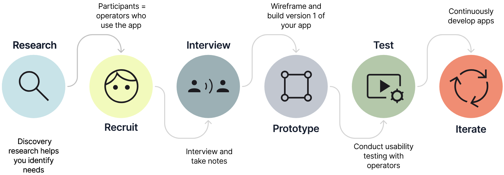
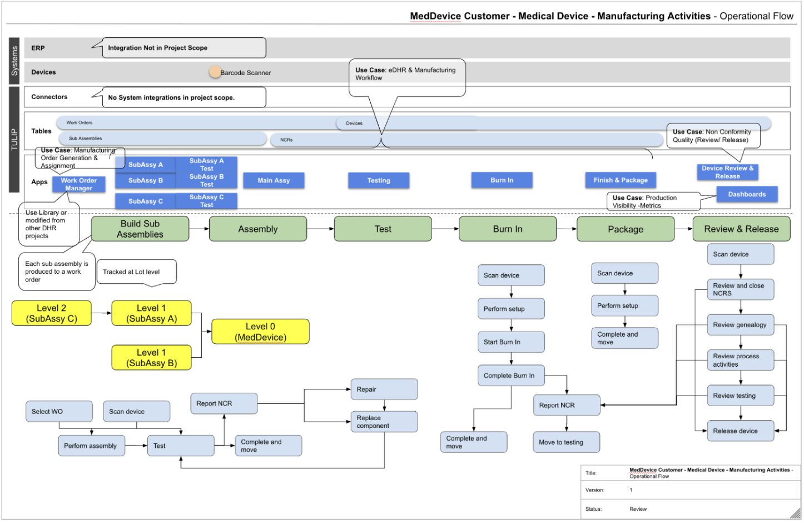
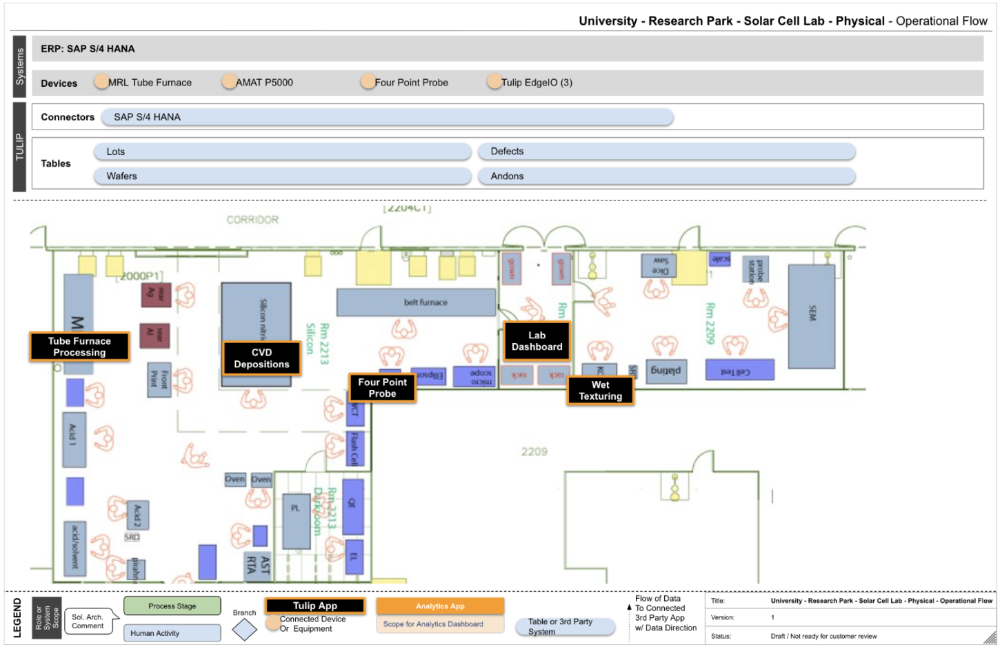

Driving Business Value with User Research
Why User Research Should Inform App Design
User research enables you to focus KPIs, prioritize app requirements, and build intuitive apps that are customized for a specific process.
User research involves physically going down to the floor to observe and interview the end users of an app. Design without research or understanding of the activities on the floor leads to assumptions. Those assumptions can be costly: imagine spending time building an app with navigation buttons only to realize that operators wear gloves for the majority of their tasks, making them unable to use a touchscreen. Prior research would have informed the decision to use foot pedals, barcode scanners, or other ways of automating navigation.
A few seconds wasted per screen as an operator struggles to understand what data is needed or where a button is located leads to massive production costs over time:
1 hour a day of inefficiency x 200 operators = 25 Full Time Employees' worth of work wasted every year.
How to Conduct User Research
User research typically falls under two main types: discovery research and usability testing. App design is an agile and iterative process, beginning with a needs analysis and initial discovery interviews to learn about the production process and operator task flow to help you build an app that accurately models what’s on the floor.
After the app is designed, built, and published, usability testing assesses how well the app works and finds opportunities for revision.
Balancing these two types of research leads to an app that fulfills operators' needs, streamlines workflows, and adapts to evolving requirements. Discovery interviews lay the groundwork, while usability testing validates design assumptions and provides data-driven insights for improvements.
Discovery Interviews
Recruit Participants
Ideally, two people are needed to conduct interviews: one to ask questions and one to take notes. It’s best to interview one participant at a time to prevent their responses from influencing those of others.
Remember:
- Have a clear goal of what you’re trying to learn
- Aim for 5-7 participants: less than 5 is just people’s opinions, more than 7 is an echo chamber
- Interview operators of varying experience levels and demographics
- Prepare lists of questions and/or checklists, take notes, bring a sketchbook, and bring a device to record audio or video
Understand Operator Task Flow
While observing operators during the discovery phase, you'll want to ask questions that will help you design effective apps that optimize operator workflow, rather than designs that force operators to change their workflows to fit the app.
- What equipment is involved in the manufacturing activities?
- How do operators interact with the overall process, including hand-offs, material flow, and equipment sharing?
From these observations, try building an Activity OFD:
Map the Physical Space
You'll also want to map out the physical space and consider any physical constraints where the work takes place with a Physical OFD:
- Which areas, locations, or cells will your solution encompass?
- Are there any particular times when the operator has to leave this area, making the app inaccessible or less valuable in their physical space?
- What equipment or machines do operators interact with? What tools are involved? When are they wearing gloves, preventing them from using a touch screen?
Discovery Observation Questions
Physical Constraints
- What does the work space look like?
- What is the noise level?
- Do operators use gloves at any point in the process?
- Are there operators with disabilities?
Task Flow
- What decision points did the operator face?
- What inputs were required?
- Can any of these steps be combined?
- Can any steps be automated?
- Were any steps unnecessary?
- Where did the user face friction? (Where should the user face friction?)
- Did any steps require specialized training?
- When are operators manually writing things down?
People Involved
- Who is involved in the process?
- Who is authorized to perform an inspection?
- When do other people come in?
- Are signatures required?



Usability Testing
Test App Prototype
After publishing an app and deploying it on the floor, you’ll want to conduct usability testing. Usability testing should begin soon after an app has been in use.
To ensure valid results, limit interruptions during the testing process. Let operators navigate the app independently. Jot down any instances of confusion, search difficulties, excessively long tasks, or recurring navigational errors without correcting the operator. All these observations will feed into design adaptations for your app's second version.
Ask Neutral, Unbiased Questions
Make sure your questions are neutral, unbiased, and avoid leading an operator toward an answer they may not have otherwise given.
- Be specific: Instead of, "How frequently do you do this task?" ask, "How many times in the past few weeks have you had to do this task?"
- Ask neutral questions: Instead of "Do you think this button gets you here?" ask, "What did you expect would happen when you hit that button?"
- Don’t assume: Instead of asking, "What was frustrating," ask, "What was easy or difficult about completing that task?"
- Don't name interface elements, such as the "the navigation bar," say, "This area at the top of the screen, what is that?"
- Always follow up with inquiries like "Tell me more" or "Can you show me what that's like?"